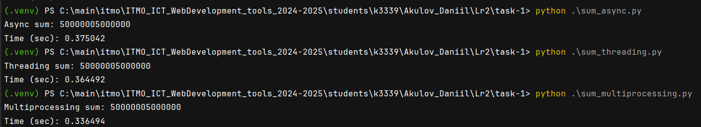

Main
Лабораторная работа 2. Потоки. Процессы. Асинхронность.
Описание
Задача 1. Различия между threading, multiprocessing и async в Python
Задача: Напишите три различных программы на Python, использующие каждый из подходов: threading, multiprocessing и async. Каждая программа должна решать считать сумму всех чисел от 1 до 10000000000000. Разделите вычисления на несколько параллельных задач для ускорения выполнения.
Подробности задания: 1. Напишите программу на Python для каждого подхода: threading, multiprocessing и async. 2. Каждая программа должна содержать функцию calculate_sum(), которая будет выполнять вычисления. 3. Для threading используйте модуль threading, для multiprocessing - модуль multiprocessing, а для async - ключевые слова async/await и модуль asyncio. 4. Каждая программа должна разбить задачу на несколько подзадач и выполнять их параллельно. 5. Замерьте время выполнения каждой программы и сравните результаты.
Задача 2. Параллельный парсинг веб-страниц с сохранением в базу данных
Задача: Напишите программу на Python для параллельного парсинга нескольких веб-страниц с сохранением данных в базу данных с использованием подходов threading, multiprocessing и async. Каждая программа должна парсить информацию с нескольких веб-сайтов, сохранять их в базу данных.
Подробности задания: 1. Напишите три различных программы на Python, использующие каждый из подходов: threading, multiprocessing и async. 2. Каждая программа должна содержать функцию parse_and_save(url), которая будет загружать HTML-страницу по указанному URL, парсить ее, сохранять заголовок страницы в базу данных и выводить результат на экран. 3. Используйте базу данных из лабораторной работы номер 1 для заполенния ее данными. Если Вы не понимаете, какие таблицы и откуда Вы могли бы заполнить с помощью парсинга, напишите преподавателю в общем чате потока. 4. Для threading используйте модуль threading, для multiprocessing - модуль multiprocessing, а для async - ключевые слова async/await и модуль aiohttp для асинхронных запросов. 5. Создайте список нескольких URL-адресов веб-страниц для парсинга и разделите его на равные части для параллельного парсинга. 6. Запустите параллельный парсинг для каждой программы и сохраните данные в базу данных. 7. Замерьте время выполнения каждой программы и сравните результаты.
Выполнение
Задача 1
Код sum_async.py:
async def calculate_sum(start, end):
return sum(range(start, end))
async def main():
num_tasks = 10
chunk_size = 10000000 // num_tasks
tasks = []
for i in range(num_tasks):
start = i * chunk_size + 1
end = (i + 1) * chunk_size + 1
task = asyncio.create_task(calculate_sum(start, end))
tasks.append(task)
results = await asyncio.gather(*tasks)
total_sum = sum(results)
print("Async sum:", total_sum)
if __name__ == "__main__":
start_time = time.time()
asyncio.run(main())
end_time = time.time()
print(f"Time (sec): {end_time - start_time:.6f}")
Код sum_multiprocessing.py:
def calculate_sum(start, end, results):
results.put(sum(range(start, end)))
def main():
num_threads = 4
chunk_size = 1000000 // num_threads
threads = []
results = multiprocessing.Queue()
for i in range(num_threads):
start = i * chunk_size + 1
end = (i + 1) * chunk_size + 1
thread = multiprocessing.Process(target=calculate_sum, args=(start, end, results))
threads.append(thread)
thread.start()
for thread in threads:
thread.join()
total_sum = 0
while not results.empty():
total_sum += results.get()
print("Multiprocessing sum:", total_sum)
if __name__ == "__main__":
start_time = time.time()
main()
end_time = time.time()
print(f"Time (sec): {end_time - start_time:.6f}")
Код sum_threading.py:
def calculate_sum(start, end, results):
results.append(sum(range(start, end)))
def main():
num_threads = 4
chunk_size = 1000000 // num_threads
threads = []
results = []
for i in range(num_threads):
start = i * chunk_size + 1
end = (i + 1) * chunk_size + 1
thread = threading.Thread(target=calculate_sum, args=(start, end, results))
threads.append(thread)
thread.start()
for thread in threads:
thread.join()
total_sum = sum(results)
print("Threading sum:", total_sum)
if __name__ == "__main__":
start_time = time.time()
main()
end_time = time.time()
print(f"Time (sec): {end_time - start_time:.6f}")
Результат выполнения: 
Таблица сравнения времени выполнения
| Метод | Время выполнения (секунд) |
|---|---|
Потоки (threading) |
0.36 |
Процессы (multiprocessing) |
0.33 |
Асинхронность (asyncio) |
0.37 |
Все способы заняли примерно одинаковое время. Но multiprocessing занял меньше всего времени.
Задача 2
Список ссылок для парсинга:
urls = [
'https://www.хакатоны.рус/tpost/0kblp5ouv1-vnedreid',
'https://www.хакатоны.рус/tpost/o5y3kpvtj1-architech',
'https://www.хакатоны.рус/tpost/80uis0egp1-go-ctf-2025',
'https://www.хакатоны.рус/tpost/yd4yk40ta1-forum',
'https://www.хакатоны.рус/tpost/eculsok1x1-unithack-2025',
'https://www.хакатоны.рус/tpost/dp1t70lav1-tech-squad-missiya-ii',
'https://www.хакатоны.рус/tpost/3i2n66z1y1-kiberhak',
'https://www.хакатоны.рус/tpost/imklbzv241-belie-hakeri',
'https://www.хакатоны.рус/tpost/1fhvmnaa81-gorod-geroev'
]
Код функция для парсинга сайта и сохранения в бд:
html_paths = {
"title": '#rec488755787 > div > div > div.t-feed__post-popup__container.t-container.t-popup__container.t-popup__container-static > div.t-feed__post-popup__content-wrapper > div:nth-child(3) > div.t-feed__post-popup__title-wrapper > h1',
'description': '#feed-text > div > section > div > div:nth-child(1)'
}
def _get_text_from_html(tag, default_text):
return tag.text.strip() if tag else default_text
def parse_page(html_data):
bs = BeautifulSoup(html_data, 'lxml')
title_tag = bs.select_one(html_paths.get('title'))
title = _get_text_from_html(title_tag, "No title")
description_tag = bs.select_one(html_paths.get('description'))
description = _get_text_from_html(description_tag, "No description")
return {'title': title, 'description': description}
def parse_and_save_page(html_data):
data = parse_page(html_data)
with next(get_session()) as session:
hackathon = Hackathon(
name=data["title"],
description=data["description"],
start_date=datetime.now(),
end_date=datetime.now() + timedelta(days=7),
)
session.add(hackathon)
session.commit()
Таблица сравнения времени выполнения
| Метод | Время выполнения (секунд) |
|---|---|
Потоки (threading) |
1.13 |
Процессы (multiprocessing) |
2.96 |
Асинхронность (asyncio) |
1.16 |
Потоки (threading):
Потоки в Python хорошо подходят для задач, связанных с вводом-выводом (I/O-bound), таких как сетевые запросы или работа с файлами. Поскольку парсинг HTML и взаимодействие с базой данных, использование потоков дало наилучший результат. Потоки позволяют эффективно использовать время ожидания, когда программа ждет ответа от сервера или базы данных.
Процессы (multiprocessing):
Модуль multiprocessing создает отдельные процессы, что позволяет обойти ограничения GIL (Global Interpreter Lock) в Python. Однако для задач, которые в основном зависят от I/O, накладные расходы на создание и управление процессами могут привести к увеличению времени выполнения. Использование процессов оказалось менее эффективным, чем потоки, из-за этих накладных расходов.
Асинхронность (asyncio):
Асинхронный подход также хорошо подходит для I/O-bound задач, так как он позволяет выполнять другие операции, пока ожидается завершение текущей. Асинхронный метод показал результат, близкий к потокам, но немного медленнее. Это может быть связано с тем, что асинхронный код требует больше времени на управление событиями и контекстами.